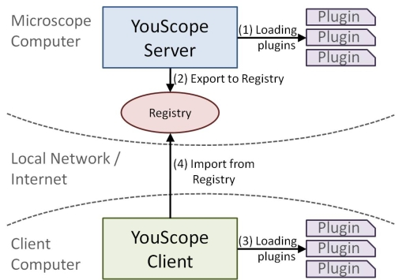
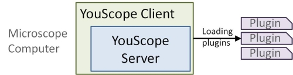

Server-Client Concept
YouScope is implemented strictly separating the functionality from the user interface. This separation is done to ease the evolution of YouScope, and to simplify reusing the same functionality in related workflows. The separation is implemented by splitting YouScope into two modules, the server -implementing the functionality- and the client -implementing the user interface. The separation between client and server might be misleading. In deed, the server and the client can be started on two different computers/in two different processes. This method allows to control the microscope from any computer in the same network/connected to the internet (see Figure 1); however, the access requires an authentification, i.e. is password protected. Thus, it is e.g. possible to start a long-time measurement at work and to control its progress from home, increasing the experimentalist's free-time. However, it is also possible to start the client and the server in the same process on the computer directly connected to the micrscope (see Figure 2). Although, then, it is not possible anymore to control the microscope from other computers, this method reduces network traffic, increases speed (especially for fast imaging), and naturally increases security.

Figure 1: YouScope server and client run in two different processes, which might (or might not) be on two different computers connected via a local network or the internet. First, the YouScope server is started on the computer connected to the microscope, which (1) loads dynamically all server related plugins, and (2) exports itself into a registry, where it can be found by client applications. Second, the YouScope client is started on either the same or any other computer, which (3) loads all client related plugins, and (4) connects to the microscope computer. The client authentificates itself and querries from the registry an interface with which it can control the server and therewith the microscope.

Figure 2: Alternatively to the workflow described in Figure 1, the client and the server can be loaded into the same process on the microscope computer. The client is then communicating directly to the server and to therewith to the microscope, which reduces network traffic and increases the speed.
Which of the two methods to run YouScope is chosen only depends on the use case and the user preferences. However, it is important to understand that YouScope is splitted up into the two functional modules "client" and "server". This splitting was done such that neither the client has any information about how the functionality is implemented on the server side, nor that the server knows which type of client is connected to it (client and server only communicate through well defined interfaces). This allows to separatly continue to develop the client and the server, or to even replace the YouScope client with an own application, which just uses the functionality of the server.
{kind=link}
{kind=link}